User Guide
This section describes the user interface structure and functionality for all three types of users: Customer, Staff, and Super Admin. Each role has different needs and different pages available to them.
User Interface Overview
The application has two separate websites with separate login systems:
| Website | URL | Who Uses It |
|---|---|---|
| Customer website | https://veg-buffet-web.onrender.com/ |
General public / customers |
| Internal staff portal | https://veg-buffet-web.onrender.com/admin/login.php |
Staff and Super Admin only |
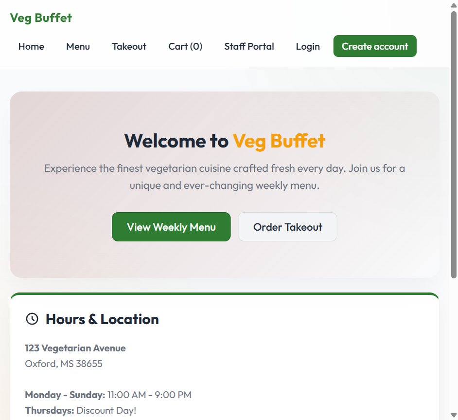
Customer Website Navigation Bar
| Nav Item | Page | Purpose |
|---|---|---|
| Home | /index.php | Homepage with restaurant hours, address, and pricing |
| Menu | /menu.php | Weekly buffet menu organized by day |
| Takeout | /takeout.php | Takeout sets available to order |
| Cart | /cart.php | Cart review and checkout |
| Login | /login.php | Customer login (hidden when already logged in) |
| Create account | /register.php | Customer registration (hidden when logged in) |
| My Orders | /my_orders.php | Order history — only shown when logged in |
| Staff Portal | /admin/login.php | Link to the internal staff login page |
Customer Guide
Customers are members of the general public who visit the website to browse the menu and place takeout orders.
Step 1 — Create an Account
Click Create account in the navigation bar. Fill in the form and click Create Account.
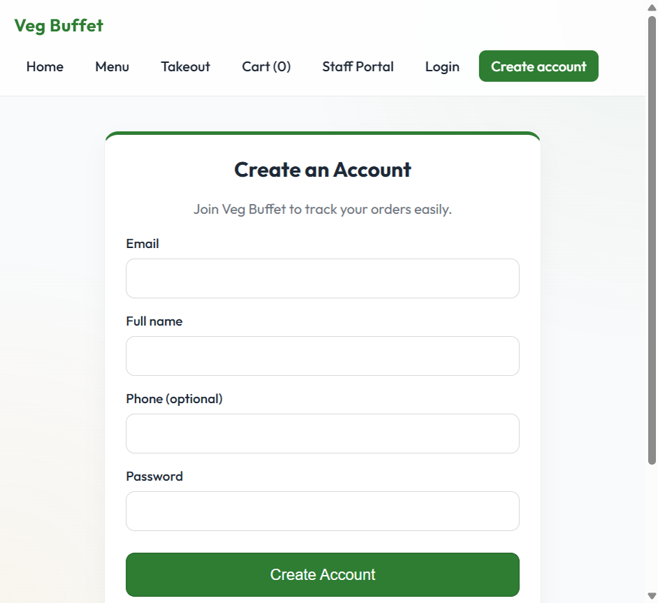
- Email — used as the login username; must be unique across all customer accounts
- Full name — displayed on the order card for staff to identify the order
- Phone — optional; for staff to contact you if there is an issue with the order
- Password — minimum 6 characters; stored as a bcrypt hash, never as plain text
Step 2 — Browse the Weekly Menu
Click Menu in the navigation bar to see what the restaurant is serving this week. The menu is organized by day — click any day tab to see that day's dishes. Clicking a dish name expands it to show the full ingredient description.
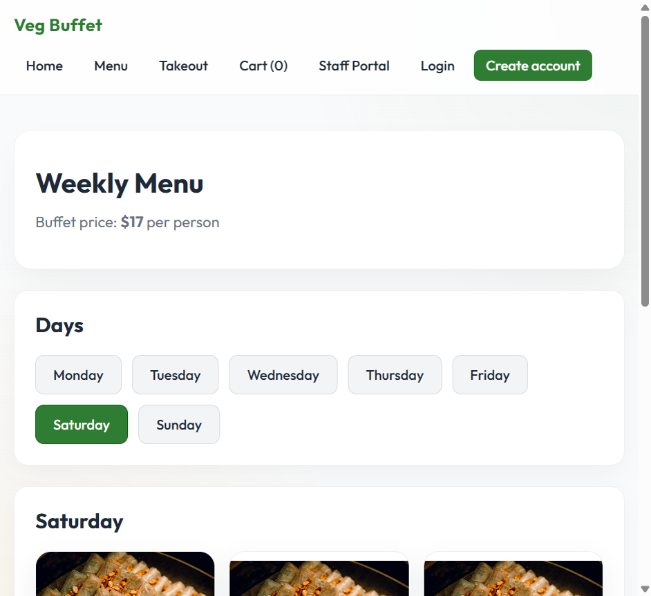
Step 3 — Choose a Takeout Set
Click Takeout in the navigation bar to see all available sets. There are two types of takeout options:
| Type | Description | Examples |
|---|---|---|
| Fixed sets | Pre-packaged combinations at a fixed price. Contents are decided by the restaurant. | Vegan Delight Box ($14.99), Spicy Thai Combo ($15.00), Gluten-Free Harvest ($16.50) |
| Custom Takeout Box | You type up to 6 dish names from the weekly menu. Staff will prepare the first 6 listed. | Custom Takeout Box ($18.00) |
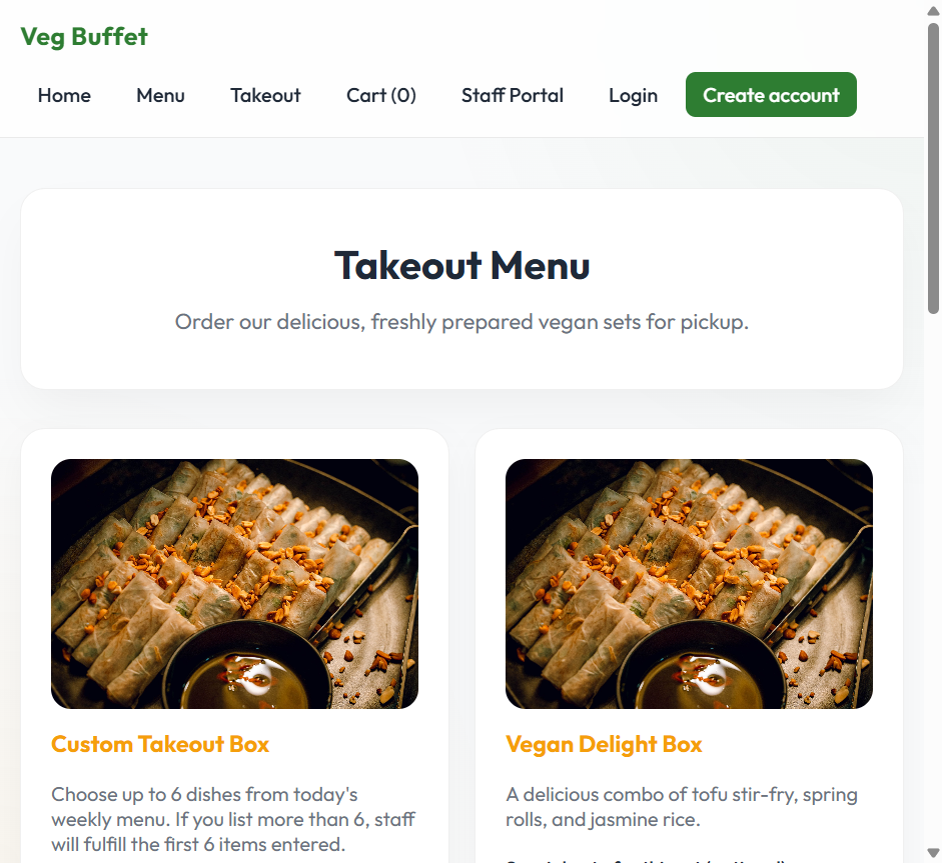
For any set, you can optionally enter a special note (e.g., "no peanuts", "less spicy", "pack sauce separately") in the text field that appears on the set card before clicking Add to Cart.
For the Custom Takeout Box, a text area appears where you type your chosen dish names (one per line or comma-separated). Staff will prepare the first 6 dishes you list.
Step 4 — Review Your Cart and Enter Pickup Details
Click Cart in the navigation bar to review your order before paying.
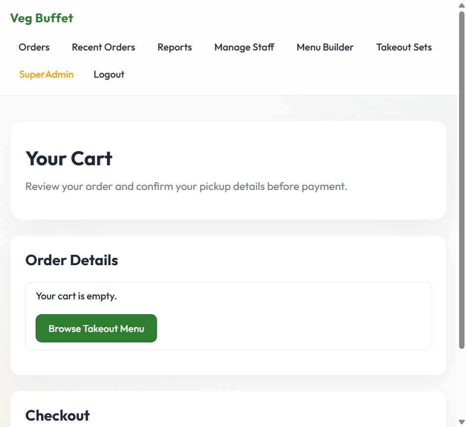
On the Cart page you can:
- Review all items, their unit prices, quantities, and the order total
- Remove any item by clicking the X button next to it
- Enter your name and phone number (required for staff to identify and contact you)
- Choose a pickup time — must be a time later today during operating hours
- Optionally add special instructions or allergy notes that apply to the whole order
- Click Proceed to Payment to continue to the Stripe payment page
Step 5 — Pay via Stripe Checkout
Clicking Proceed to Payment creates your order in the database (status: Pending) and redirects you to Stripe's hosted payment page. This page is served by Stripe — your payment details are entered directly on Stripe's servers, not on the Veg Buffet server.
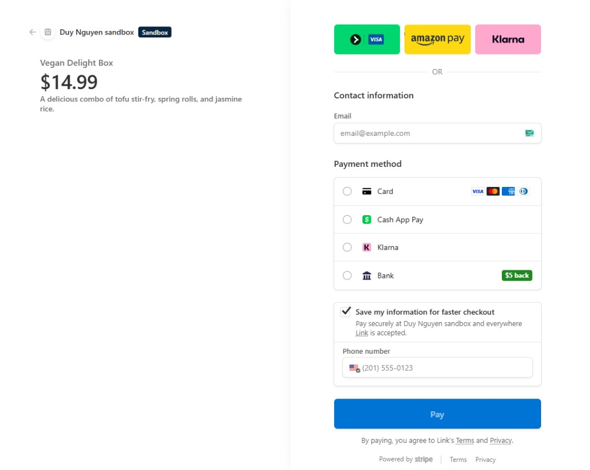
Select Card as the payment method. For testing, use the following card details (no real money is charged — these are Stripe's official test values):
| Card Field | Test Value to Enter |
|---|---|
| Card number | 4242 4242 4242 4242 |
| Expiry date | Any future date — e.g., 12/29 |
| CVC | Any 3 digits — e.g., 123 |
| Cardholder name | Any name |
Click Pay. Stripe processes the payment and redirects you back to the order confirmation page on the Veg Buffet site. Your order status changes from Pending to Paid, and it appears in the staff queue immediately.
Step 6 — Track Your Order
After payment, you are redirected to the order confirmation page which shows your order number and a real-time status tracker. The status updates automatically — no need to refresh the page.
My Orders
Click My Orders in the navigation bar (only visible when logged in) to see a full history of all your orders, newest first.
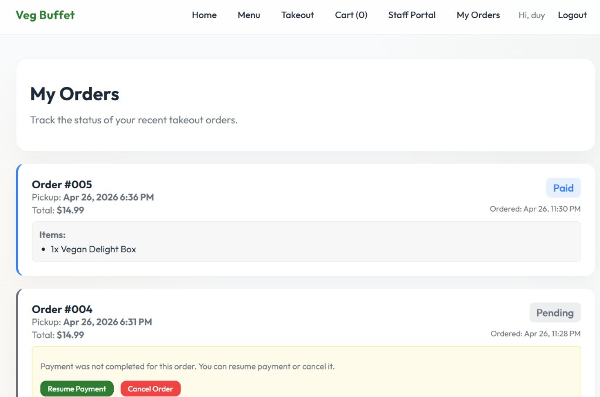
Each order card shows:
- Order number, pickup time, total amount, and the date/time the order was placed
- Items included in the order
- Current status (color-coded badge: Paid, Pending, Preparing, Ready, Completed, Cancelled)
- For Pending orders (payment not completed): a note explaining the situation, with a Resume Payment button to return to Stripe, and a Cancel Order button to discard the order
Staff Guide
Staff members use the internal portal to process incoming orders in real time. Staff accounts are created exclusively by the Super Admin — staff cannot self-register.
A Staff account has access to two pages only:
- Orders — the live order fulfillment queue
- Recent Orders — the full order history
Staff do not have access to menu management, takeout set management, staff account management, or sales reports. Those are Super Admin only.
Logging In
Go to the staff portal login page:
- Live site: https://veg-buffet-web.onrender.com/admin/login.php
- Local (Docker): http://localhost:8080/admin/login.php
| Field | Value |
|---|---|
staff@vegbuffet.com | |
| Password | password |
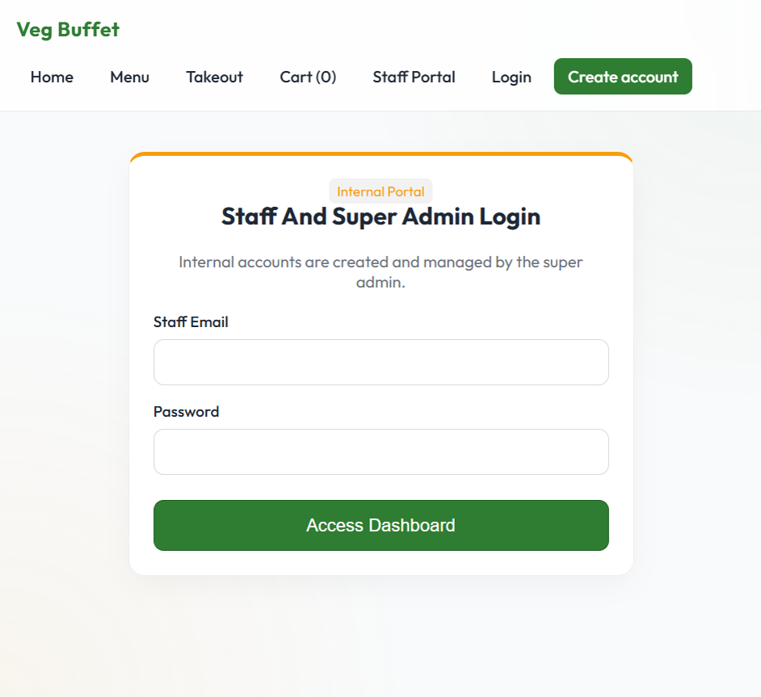
The Active Fulfillment Queue
After logging in, you land on the Orders page — the live fulfillment queue. The page shows three summary cards at the top and all active orders below.
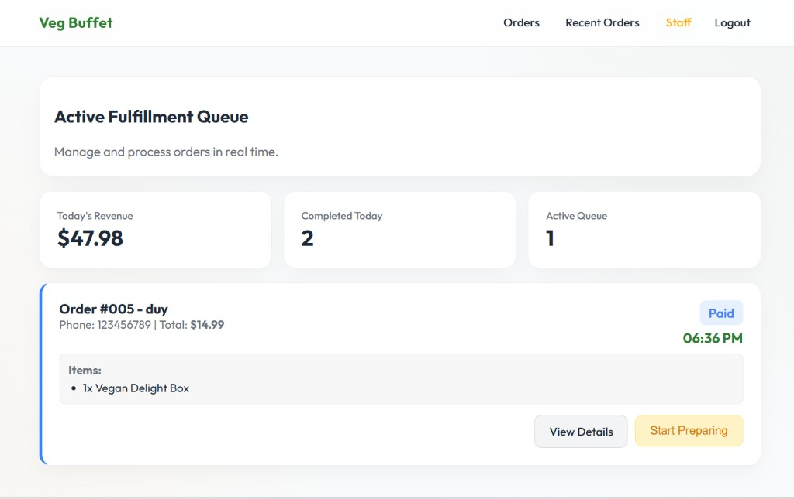
The three summary cards show:
- Today's Revenue — total amount from all paid orders placed today
- Completed Today — number of orders successfully handed to customers today
- Active Queue — number of orders currently being processed (Paid or Preparing)
Reading an Order Card
Each order card displays everything needed to fulfill the order:
- Order number and customer name — e.g., "Order #005 – duy"
- Phone number and total amount — shown below the order title
- Pickup time — shown in green on the upper right; orders are sorted earliest first
- Status badge — color-coded (Paid, Preparing, Ready)
- Items list — every item and quantity in the order
- Special instructions / allergy notes — shown in a highlighted callout box if the customer added any
Each card also has two action buttons:
- View Details — opens the full order detail page, including the Stripe payment reference ID and all timestamps
- Status action button — advances the order to the next stage (see table below)
Processing an Order
Advance each order through its stages by clicking the action button on the card. The status updates immediately and the customer's tracking page reflects the change in real time.
| Current Status | Button on Card | Next Status | When to Click |
|---|---|---|---|
| Paid | Start Preparing | Preparing | When you start preparing this order in the kitchen |
| Preparing | Mark Ready | Ready | When the order is fully packed and waiting for the customer to pick up |
| Ready | Complete Order | Completed | When the customer has collected their order |
Once marked Completed, the order card disappears from the queue automatically and moves to the Recent Orders history. The customer's status tracker updates at the same time.
Recent Orders (Order History)
Click Recent Orders in the navigation bar to view all past orders, newest first. This includes completed, cancelled, and all active orders across all time. Click any order to see its full detail page, including the Stripe payment reference ID and all status change timestamps.
Super Admin Guide
The Super Admin has full access to everything the Staff can do, plus four additional management areas:
- Menu Builder — manage the weekly dish menu by day
- Takeout Sets — manage the takeout product catalog
- Manage Staff — create, disable, and reset passwords for staff accounts
- Reports — view sales analytics and business insights
Login credentials (default, change after setup):
- Email:
admin@vegbuffet.com - Password:
password
Super Admin Navigation Bar
| Nav Item | Who Can See It | Purpose |
|---|---|---|
| Orders | Staff + SuperAdmin | Live order fulfillment queue |
| Recent Orders | Staff + SuperAdmin | Full order history |
| Reports | SuperAdmin only | Sales analytics, revenue, best sellers |
| Manage Staff | SuperAdmin only | Create, disable, reset staff accounts |
| Menu Builder | SuperAdmin only | Edit the weekly menu per day |
| Takeout Sets | SuperAdmin only | Add, edit, and toggle availability of takeout sets |
Menu Builder
Go to Menu Builder. This page controls which dishes appear on each day of the weekly menu.
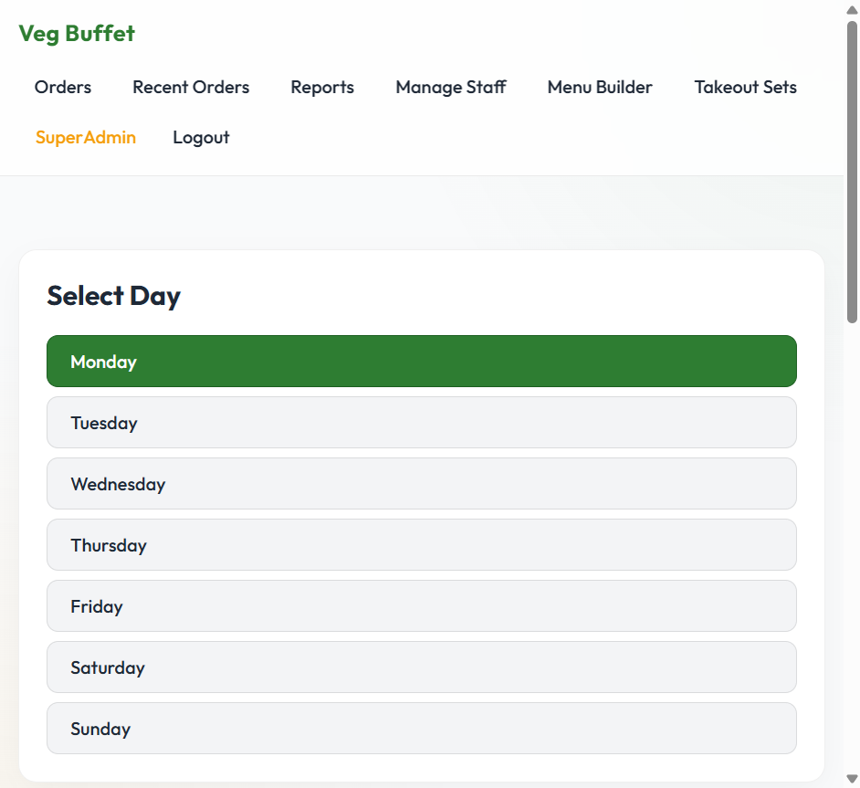
How to use:
- Click a day name to select it. The current dishes for that day appear on the right.
- To remove a dish from the day, click Remove next to it.
- To add a dish, fill in the Dish Name, Description, and optionally upload an image, then click Add.
Takeout Sets Management
Go to Takeout Sets to manage the product catalog customers see on the Takeout page.
- Add a set: fill in name, description, price, image, and availability, then click Add Set.
- Toggle availability: each set has an Available/Unavailable toggle. Unavailable sets are hidden from customers.
- Edit a set: click Edit to modify any field.
- Delete a set: click Delete to permanently remove a set.
Staff Account Management
Go to Manage Staff to manage who has access to the internal portal.
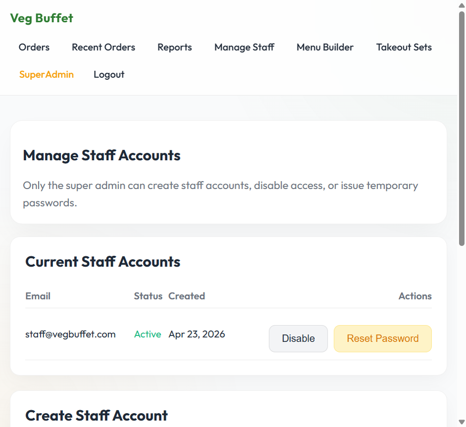
Creating a Staff Account
- Scroll to the Create Staff Account section.
- Enter the staff member's email and a temporary initial password.
- Click Create Staff. The account is immediately active.
- Share the credentials with the new staff member securely.
Disabling an Account
Click Disable next to an account. The staff member can no longer log in. Their account is not deleted — click Enable to restore access.
Resetting a Password
Click Reset Password next to an account. Enter and confirm a new temporary password. Share it with the staff member so they can log in.
Sales Reports
Go to Reports to view sales data. Accessible only to the Super Admin.
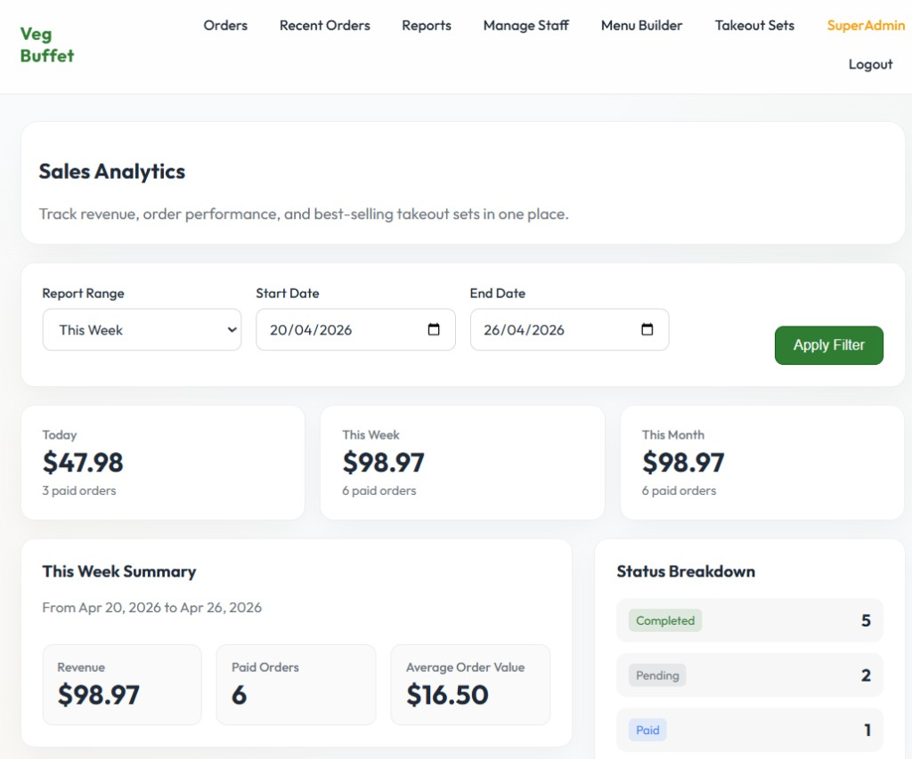
| Report Section | What It Shows |
|---|---|
| Overview cards (top) | Revenue and order count for Today, This Week, and This Month — always shown regardless of the filter |
| Report Range filter | Select Today / This Week / This Month / Custom Range. Click Apply Filter to update the data below. |
| Summary | Revenue, paid order count, and average order value for the selected period |
| Best-Selling Sets | Ranked table of takeout sets by units sold and revenue |
| Status Breakdown | Count of orders in each status for the period |
| Business Insights | Auto-generated text insights (e.g., top seller, underperforming sets) |
| Slow-Moving Sets | Available sets with the fewest orders — useful for deciding what to promote or remove |
| Peak Pickup Windows | Time slots with the most orders — useful for staffing |
Cancelling an Order
On the Order Queue dashboard, Super Admins see a Cancel Order button on each order card. This immediately sets the order to Cancelled status.
Accessibility
The Veg Buffet web interface includes the following accessibility considerations:
- Semantic HTML — uses
<nav>,<main>,<section>,<button>,<label>, and other semantic elements that provide baseline screen reader compatibility. - Labeled form inputs — every form field has an associated
<label>element, which is required for screen reader users to understand what each input expects. - Text alongside color — status indicators (Paid, Preparing, Ready, Completed, Cancelled) always include the status name as text, not just color. Color is not the sole means of conveying information.
- Keyboard navigability — all interactive elements (buttons, links, form fields) are reachable by keyboard using the Tab key, consistent with standard browser behavior.
- Responsive layout — the layout adapts to mobile screens, tablets, and desktops. No specialized device or screen size is required.
- No specialized hardware required — the application runs entirely in a standard web browser and requires no specialized hardware.
The interface is self-explanatory by design, with informative button labels (e.g., "Start Preparing", "Mark Ready", "Complete Order") and descriptive error messages shown inline when form validation fails.